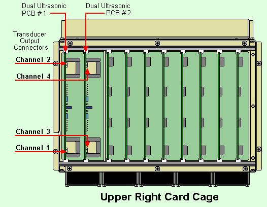
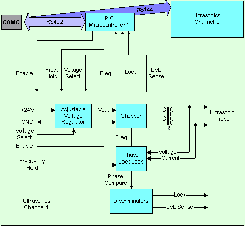
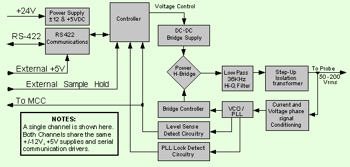
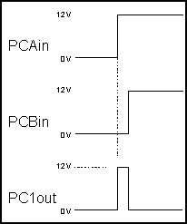
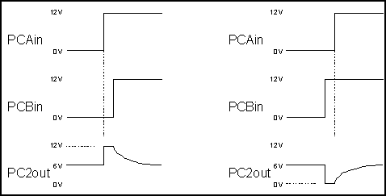
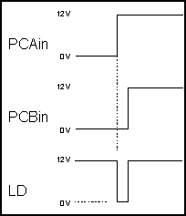

Ultrasonics PCB Operating Principles
Purpose
This document details the operating principles for the ultrasonics PCB.
Module Function
The dual ultrasonics PCB operates the ultrasonics for the reagent pipettors. Each PCB operates two pipettors.
Dual Ultrasonic PCBs Location
The dual ultrasonics PCBs occupy the left slots in the upper right card cage.

Operational Overview
The operating steps for the PCB are not provided in this document. It is not essential that service personnel understand all that occurs on this PCB. The PCBs outputs are most important. Explanations of the various aspects of overall operation are described in sections that follow.
PCB Functions
- Mixing - When the probe is mixing, the displacement of the tip is controlled by the AC voltage applied to the probe. As the probe voltage (measured in rms) is increased, the displacement of the probe tip increases proportionally. The PCB creates a variable probe voltage by controlling the DC supply voltage to the H-Bridge that feeds the step-up transformer.
- Sample level sense - Accomplished by detecting a phase error that exceeds the normal loop phase error during a low-power lock.
- Probe dry - After a probe is washed in the tower, the probe is lifted upward. A burst of power is applied to the transducer that causes the probe to oscillate at high frequency, which dries the probe exterior.
PCB Circuitry Block Diagram

Component Locations
Component locations are not provided for this PCB. Service personnel are advised not to change or repair this PCB unless directed to do so by the support group.
Probe Power Drive
The drive circuit for the probe starts with a low dropout, adjustable, linear regulator. The D/A converter, controlled by the microprocessor, controls the regulator output by changing the reference input voltage to the regulator. This DC supply voltage is used to feed the h-bridge that drives the step-up isolation transformer. A single chip, HIP4080, controls the traditional h-bridge. The output is a square-wave that reaches the amplitude close to the value of the +24 V DC supply voltage. This output is filtered through a high Q low pass filter with a cutoff frequency of approximately 36 kHz. The filter is intended to give slight gain at 36 kHz and to change the square-wave into a smooth sine wave. This sine wave drives the transformer primary windings.

Detailed PCB Operation Principles
- At the core of the PCB is a phase lock loop-integrated circuit. This device compares the voltage (high side, SIN) and current (low side, CIN) for frequency and voltage phase and frequency equality.
- The MC14046B phase locked loop contains two phase comparators, a voltage controlled oscillator (VCO), source follower, and zener diode (not used). The comparators have two common signal inputs, PCAin and PCBin. Input PCAin can be used directly coupled to large voltage signals, or indirectly coupled (with a series capacitor) to small voltage signals. The self–bias circuit adjusts small voltage signals in the linear region of the amplifier.
- Phase comparator 1, an exclusive OR gate, provides a digital error signal PC1out, and maintains 90° phase shift at the center frequency between PCAin and PCBin signals (both at 50% duty cycle). Phase comparator 1 is used for detecting level sense. A large change in phase error under a stable lock condition (usually done with about 50 VRMS at the probe).

- Phase comparator 2, with leading edge sensing logic, provides digital error signals, PC2out, and LD, and maintains a 0° phase shift between PCAin and PCBin signals (duty cycle is immaterial). PC2out is used for the control feedback to the VCO input. The LD error signal is used to detect a locked condition.


Overview of PCB Operations
- The linear VCO produces an output signal (VCOout). The output frequency is determined by the voltage of input (VCOin) and the capacitor and resistors connected to pins C1A, C1B, R1, and R2. The source follower output (SFout) is coupled with an external resistor and is used where the VCOin signal is necessary but no loading can be tolerated. The inhibit input (Inh), when high, disables the VCO and the source follower to minimize standby power consumption.
- The phase-error signal (PC1out) runs through a passive filter (band-pass) and amplifier. The output of the amplifier is filtered (low pass) before entering into the comparator with a digitally programmable reference. The output of the comparator is latched using a D flip flop. This is the level sense signal.
- An input voltage of 24 V DC is supplied to the ultrasonics PCB. Using DC-to-DC converters, the ultrasonics PCB generates ±12 V DC and +5 V DC for use on the PCB.
- When the cover is opened, the power to the upper right card cage is removed, which disables all pipettors and communication to the ultrasonic PCBs.
Interacting Devices
- MCC / Ultrasonics backplane PCB
- Communications PCB
- Reagent pipettor interface PCB